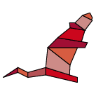

Suche

Hat ein System polynomieller Ungleichungen über den reellen Zahlen eine Lösung? SMT-RAT beantwortet solche Fragen mit Modulen, die sich zu einem Solver kombinieren lassen — ich habe an dem gearbeitet, das den Suchraum mit Intervallarithmetik eingrenzt.
- Art
- SMT-Solver-Baukasten · C++
- Lehrstuhl
- Theorie der hybriden Systeme, RWTH
- Mein Teil
- ICP-Modul
-
Das Problem
Viele Fragen aus Verifikation und Ingenieurwesen laufen auf eine hinaus: Gibt es eine Belegung mit reellen Zahlen, die eine boolesche Kombination polynomieller Bedingungen erfüllt? Kann dieses hybride System einen unsicheren Zustand erreichen, terminiert dieses Termersetzungssystem, gilt diese Ungleichung? Solche Formeln nichtlinearer reeller Arithmetik sind entscheidbar, aber die vollständigen Verfahren sind teuer — im schlimmsten Fall mindestens exponentiell.
-
SMT-RAT
SMT-Solver kombinieren einen schnellen SAT-Solver für die boolesche Struktur mit Theorie-Solvern für die Arithmetik. SMT-RAT (Satisfiability-Modulo-Theories Real Algebra Toolbox), entwickelt am Lehr- und Forschungsgebiet Theorie der hybriden Systeme der RWTH, macht den Theorie-Teil modular: Jedes Verfahren — Simplex, virtuelle Substitution, Intervall-Constraint-Propagation, zylindrisch-algebraische Zerlegung und mehr — ist ein Modul, und eine Strategie verkettet Module zu einem Solver. Günstige, unvollständige Verfahren kommen zuerst und reichen ein kleineres Problem an die teuren, vollständigen weiter. Der Werkzeugkasten ist Open Source, liest SMT-LIB 2 und baut für Polynome auf der Bibliothek CArL auf.
-
Intervall-Constraint-Propagation
Intervall-Constraint-Propagation (ICP) arbeitet auf Boxen aus Intervallen, eines pro Variable. Sie nutzt jede Bedingung, um Teile der Box wegzuschneiden, die keine Lösung enthalten können — Kontraktion —, bis die Box leer (unerfüllbar) oder klein genug zur Weitergabe ist. Ihre Schwachstelle ist die Intervallarithmetik selbst: Sie weiß nicht, dass zwei Vorkommen von
xdieselbe Zahl sind. Dieses Abhängigkeitsproblem macht Ergebnisse breiter als nötig (Abbildung oben), sodass ICP weniger kontrahiert und mehr Iterationen braucht. -
Mein Beitrag
Ich habe das ICP-Modul von SMT-RAT auf zwei Wegen verbessert [Net15]. Erstens eine neue Kontraktionsmethode — Propagation von Intervallen durch die Bedingung — zusätzlich zur bestehenden, Newton-basierten Kontraktion. Zweitens eine Datenstruktur für multivariate Horner-Schemata: Polynome werden verschachtelt umgeschrieben, brauchen so weniger Operationen und wiederholen Variablen seltener, wodurch die Intervalle enger bleiben. Zwei Heuristiken wählen die nächste auszuklammernde Variable — eine schnelle, eine auf möglichst geringe Überapproximation ausgelegte —, und ein Vereinfachungsschritt komprimiert das Ergebnis.
Auf den üblichen SMT-LIB-Benchmarks hat sich die Propagation klar ausgezahlt: Auf keymaera (Verifikation hybrider Systeme) wurden mehr Instanzen mit weniger Timeouts in kaum mehr als der halben Zeit gelöst, und auf hong ließen sich im selben Zeitrahmen fast doppelt so viele Testfälle lösen. Die Horner-Schemata machten ICP zwar präziser — auf einzelnen Instanzen bis zu 46 % weniger Kontraktionen —, ihr Aufbau kostete aber mehr Zeit, als die engeren Intervalle einsparten. Ein ehrliches Ergebnis, das die nächsten Schritte zeigte: die Heuristik je Eingabe wählen und Polynome aus der Sicht einer einzelnen Variable auswerten.
- Net15